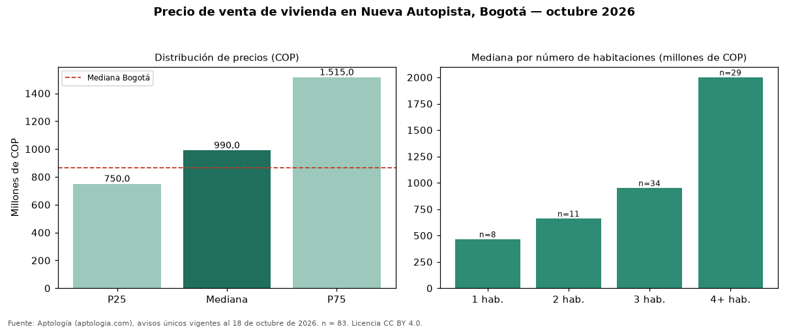

Precio de venta de vivienda en Nueva Autopista, Bogotá — octubre 2026
Con 83 avisos únicos analizados, el precio mediano de vivienda en venta en Nueva Autopista (localidad de Usaquén), Bogotá es COP 990 millones. Eso la ubica 14 % por encima de la mediana de Bogotá para vivienda (COP 865 millones). El segmento con más oferta es el de 3 habitaciones (34 avisos, mediana COP 950 millones); pasar de 3 habitaciones a 4 o más habitaciones sube la mediana 111 %. La dispersión es alta: el cuartil superior (COP 1,51 mil millones) es 2,0 veces el inferior (COP 750 millones). 96 % de los avisos incluye al menos un parqueadero. El estrato más frecuente en los avisos es 5. Por metro cuadrado, la mediana es COP 6.751.337/m² (+3 % frente a COP 6.557.377/m² en Bogotá), puesto 105 de 280 barrios con muestra suficiente. Datos abiertos CC BY 4.0 de Aptología; fuente y búsqueda de inmuebles: https://www.aptologia.com/venta/bogota/nueva-autopista. Archivos: PDF de 2 páginas, CSV con las cifras y gráfica PNG.

| Avisos únicos | 83 |
|---|---|
| Percentil 25 | COP 750.000.000 |
| Mediana | COP 990.000.000 |
| Percentil 75 | COP 1.515.000.000 |
| Mediana por m² | COP 6.751.336 |
Fuente: avisos vigentes de portales inmobiliarios recopilados por Aptología, deduplicados (mínimo 30 avisos únicos por celda). Precios pedidos, no cerrados. Fecha: 2026-10-18.